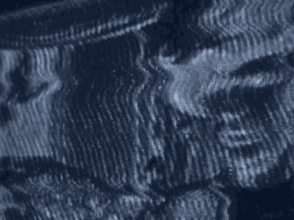

8 Q Do you recall that Mohamed is telling to you that he
9 observes that this young guy he once thought was a hothead now
10 seems to have a very close relationship with the person who is
11 the leader of the what, cell, right?
12 A Right.
13 Q And by the time August 1 comes and Mohamed is confronted
14 by Saleh in the street, he is annoyed and embarrassed that
15 Saleh would speak to him in such a way in front of this young
16 guy who he once knew as a hothead. That's what he says to
17 him, right?
18 A Yes.
19 Q He also says to you that he now recognizes that Fahad is
20 higher up than he is. Do you want me to show you?
21 A No, that's OK. OK. I think from the gist of that, I
22 believe that he was feeling annoyed that Fahad had a close
23 relationship with Saleh.
24 Q I will move away from those individuals. I just have a
25 couple more questions and I'm done -- maybe.
4705
1 And the term cell, is that a word that Mohamed used
2 or is that just your description of what he said?
3 A That's my description.
4 Q I want to ask you about some photographs, and this is from
5 GX7 that is in evidence. During the interview of Mohamed
6 Odeh, you showed him various photographs.
7 A Yes.
8 Q You showed him, for example, a photograph of Al-'Owhali,
9 right?
10 A Yes.
11 Q And he said he didn't recognize Al-'Owhali.
1